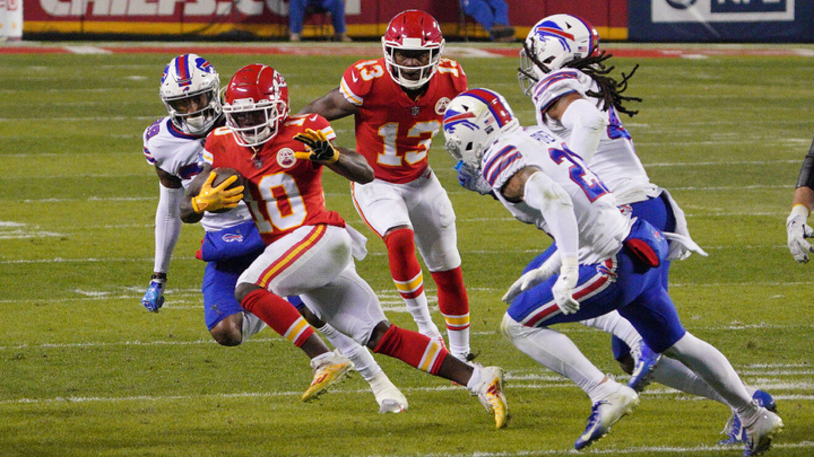
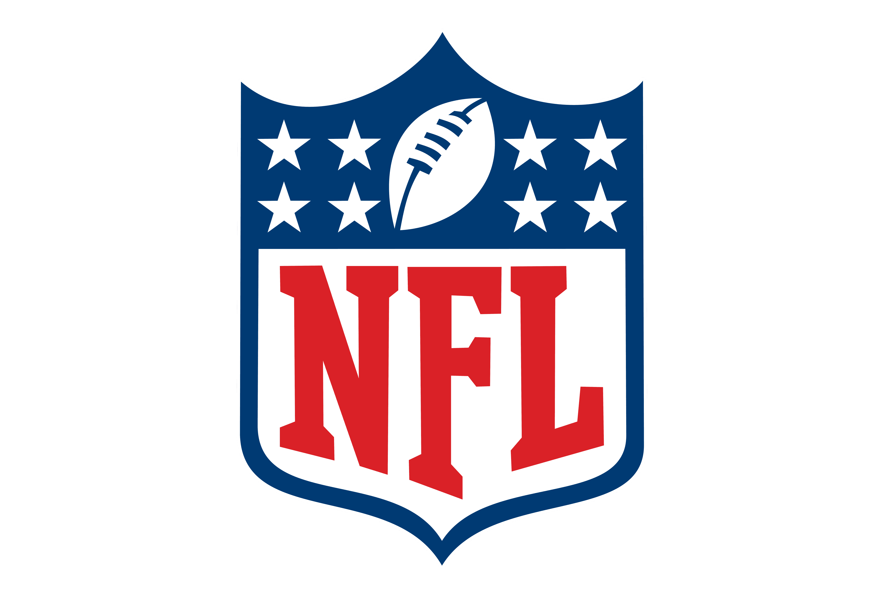

Yo voy a hablar acerca de los riesgos que se tienen al jugar fútbol americano y si vale la
pena arriesgarse al jugar éste deporte.
Desarrollo
Hace poco vi una película que trataba acerca del daño cerebral que parecen muchos jugadores
veteranos de fútbol americano. Lo que me puso a pensar acerca de los reglamentos de
seguridad que tiene éste deporte.
Creo que la salud y seguridad de la sociedad es uno de los "pilares fundamentales" de toda
sociedad, ya que sin ellos, el mundo sería un caos. Pero si hablarmos acerca de un deporte
(que en un principio, se puede decir que es un hobby) éstas "reglas" aplican más fuerte. Por
lo que hablaré un poco acerca de los riesgos que se corren al practicar éste deporte.
Motivación
Como les dije antes, mi interés en este tema se debe a la película que vi. La cual hablaba
acerca de un problema que se tiene que resolver lo antes posíble.

wallpaper americano.
Ranking
27/01/2022
Top 10 equipos de football americano
Se realizará un top de los 10 mejores equipos de football americano.
Rams
49ers
Packers
Chiefs
Cowboys
Dolphins
Saints
Seahawks
Bears
Patriots
wallpaper americano.
Sitios oficiales
27/01/2022
5 sitios oficiales de equipos de basketball
Se realizará un listado con links a páginas relacionadas a equipos de football americano.
El video me gustó y dice muy bien lo que es el americano.
Investigación
23/01/2022
Futbol americano
El fútbol americano es inmensamente popular en los Estados Unidos. Cada
juego requiere mucha preparación y es muy físico, por lo que los jugadores
necesitan varios días entre ellos para estudiar al equipo y para recuperarse de
los esfuerzos que hayan realizado con anterioridad. Es uno de los deportes de
contacto más famosos y competitivos de Estados Unidos y que ha logrado
expandirse a muchos países. Es un juego peligroso debido al tipo de contacto
que se da entre los jugadores, sin embargo, es muy practicado a nivel mundial.
1
Origen del futbol americano
El fútbol americano se originó en el continente que lleva su nombre
evolucionando del Association Football y del Rugby. Sus primeros registros
son en universidades con un parecido más similar al Rugby en el que la bola
no podía ser cargada ni recogida. Al definir los estándares en 1873, la
Universidad de Harvard se negó a participar porque querían que se cargará el
balón. Posterior a eso se empezaron a establecer las reglas base que se
mantendrían hasta nuestros días. El deporte es llamado Gridiron Football por
la palabra en inglés “parrilla” y el aspecto de la cancha. ¿Entonces cuál es el
verdadero fútbol?, No hay uno. Fútbol se refiere a una enorme familia de
deportes que se denominan así por el término establecido en la época
medieval. Son juegos realizados «de pie». Entonces sí está bien decir Fútbol
Americano como también es correcto señalar el «tradicional» como Fútbol
Soccer.
2
Historia del futbol americano
El fútbol americano es un deporte de contacto en el que dos equipos de
jugadores intentan llevar el balón a la zona de anotación o patearla entre los
postes. El fútbol americano nació hace más de 100 años en Estados Unidos de
América como una modificación del rugby inglés. La mayor manifestación
competitiva y mediática de este deporte se da en la National Football League ,
la liga de fútbol americano profesional de Estados Unidos. El fútbol americano
universitario, que se practica a nivel amateur en todo el país, también goza de
grandes ganancias y popularidad. La historia del americano puede ser
rastreada hasta las versiones más primitivas del rugby y del fútbol , ya que
ambos deportes tienen su origen en algunas variedades de fútbol jugadas en el
Reino Unido a mediados del siglo XIX, en las cuales una pelota es pateada
hacia una portería. Al igual que en el fútbol, el fútbol americano tiene 22
jugadores en el campo de juego. Incluso, algunas referencias de posiciones del
fútbol son usadas en el fútbol americano, como los términos «halfback» y
«fullback» . El fútbol americano es el resultado de divergencias del rugby,
principalmente por los cambios en las reglas instituidos por Walter Camp,
quien es considerado el “padre del fútbol americano” 3
.png) Salud VS Touchdown
Salud VS Touchdown Ranking
Ranking


 Meme
Meme